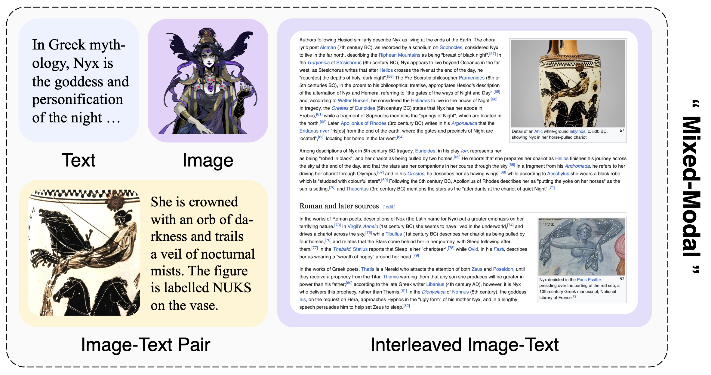
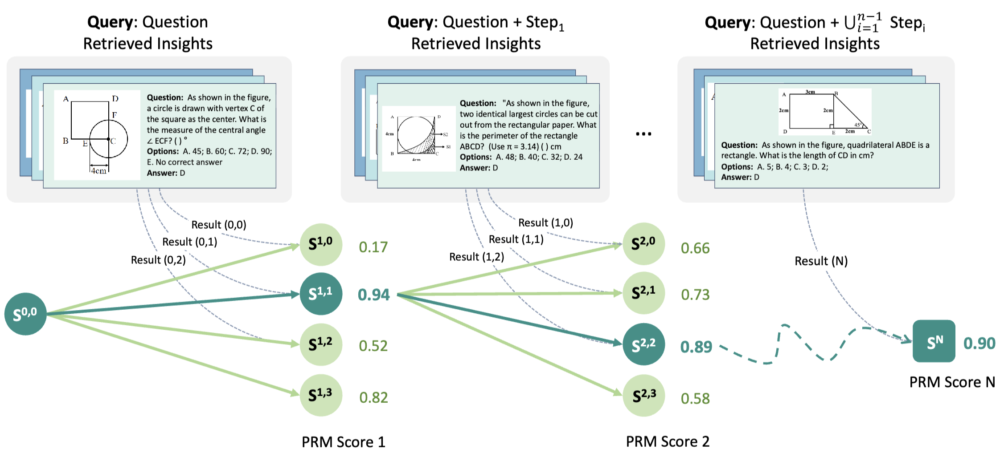
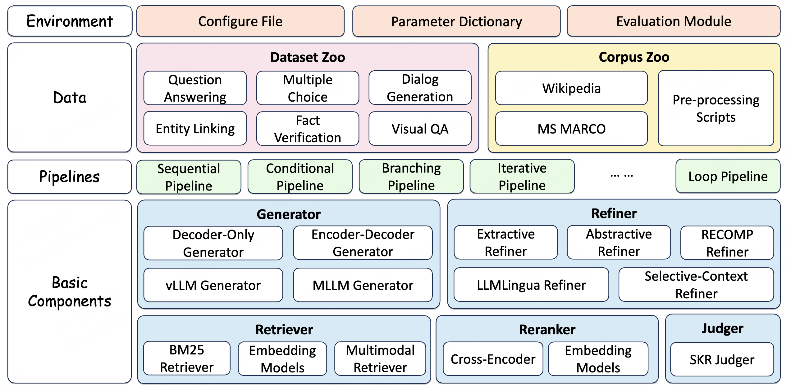
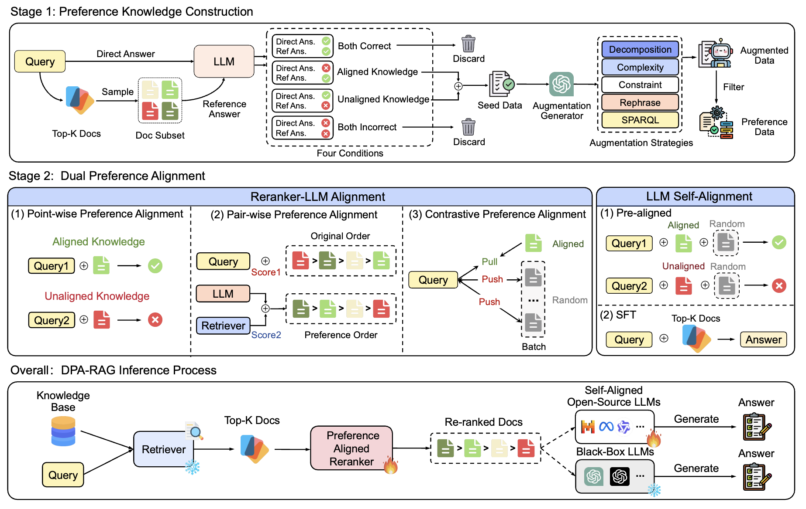
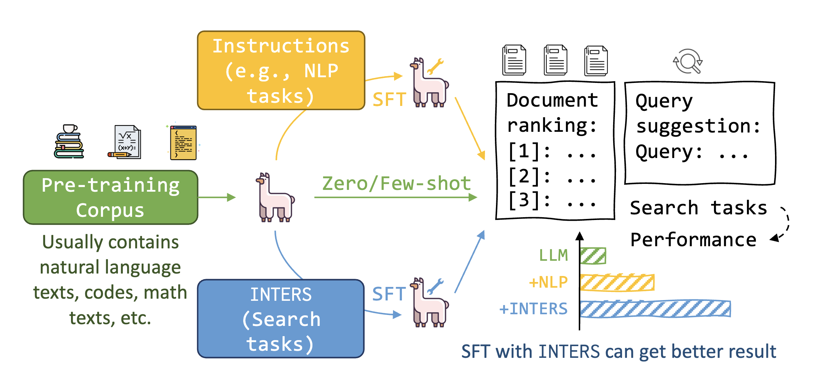

Research
I'm currently working on a unified multimodal retriever for RAG systems. Below are my prior works, with key papers highlighted.
|
|

|
Towards Mixed-Modal Retrieval for Universal Retrieval-Augmented Generation
Chenghao Zhang, Guanting Dong, Xinyu Yang, Zhicheng Dou
SIGIR, 2026
arXiv |
bibtex |
github |
hf collection |
hf paper
We propose the innovative problem of Universal Retrieval-Augmented Generation (URAG). Along with this new paradigm, we present Nyx, a unified mixed-modal retriever tailored for URAG, and NyxQA, a corresponding large-scale mixed-modal dataset for benchmarking and training.
|
|

|
Progressive Multimodal Reasoning via Active Retrieval
Guanting Dong, Chenghao Zhang, Mengjie Deng, Yutao Zhu, Zhicheng Dou, Ji-Rong Wen
ACL, 2026
arXiv |
bibtex
A framework designed to progressively improve the reasoning capabilities of MLLMs through Active Retrieval (AR) and Monte Carlo Tree Search (MCTS).
|
|

|
FlashRAG: A Modular Toolkit for Efficient Retrieval-Augmented Generation Research
Jiajie Jin, Yutao Zhu, Guanting Dong, Yuyao Zhang, Xinyu Yang, Chenghao Zhang, Tong Zhao, Zhao Yang, Zhicheng Dou, Ji-Rong Wen
WWW, Short-Paper, 2025
arXiv |
bibtex |
github project
A Python toolkit for the reproduction and development of RAG research. Including 36 pre-processed benchmark RAG datasets and 23 state-of-the-art RAG algorithms, and 7 reasoning-based methods that combine reasoning ability with retrieval.
|
|

|
Understand what LLM needs: Dual preference alignment for retrieval-augmented generation
Guanting Dong, Yutao Zhu, Chenghao Zhang, Zechen Wang, Ji-Rong Wen, Zhicheng Dou
WWW, 2025
arXiv |
bibtex
A framework designed to align diverse knowledge preferences within RAG systems
|
|

|
INTERS: Unlocking the Power of Large Language Models in Search with Instruction Tuning
Yutao Zhu,
Peitian Zhang,
Chenghao Zhang,
Yifei Chen,
Binyu Xie,
Zheng Liu,
Jirong Wen,
Zhicheng Dou
ACL, 2024
arXiv |
bibtex |
code |
dataset
A novel instruction tuning dataset, INTERS, encompassing 20 tasks across three fundamental IR categories: query understanding, document understanding, and query-document relationship understanding. The data are derived from 43 distinct datasets with manually written templates.
|
Services
Reviewers
- ARR Jan 2026, SIGIR 2026, ARR March 2026
Teaching Assistant
- Data Structures and Algorithms, 2024 Fall
- Few Shot Learning, 2025 Fall
|
|